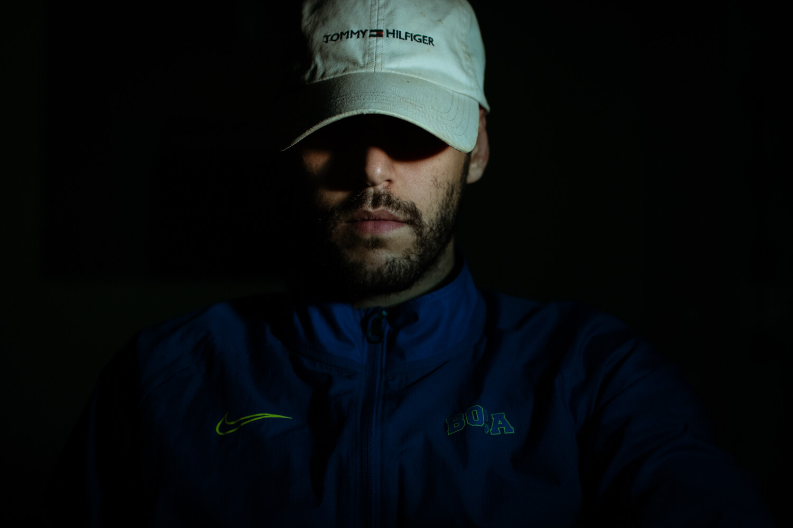

BIO
Santiago Ale García Díaz nace en el año 1994 en la ciudad de Viedma, capital de la provincia de Río Negro, Argentina.
Es diplomado en “Fotografía documental, investigación, metodología, narrativa y estética” y “Foto-reportaje documental subjetivo”, ambas dictadas por la Facultad de Filosofía y letras de la UBA.
Editor audiovisual CFP N28, Ciudad Autónoma de Buenos Aires.
Trabaja como fotógrafo y reportero gráfico en su país colaborando con diversos medios visuales, radiales, gráficos, independientes y comunitarios.
Formó parte del equipo de comunicación Health&Help Nicaragua 2023.
Participa del libro “Un dios salvaje” que reúne material fotográfico sobre el velorio y reconocimientos a Diego Armando Maradona organizado por A.R.G.R.A, InterArtis fotografía y Red editorial.
También hace su aporte en otro libro llamado “Relatos visuales de la vida en pandemia” realizado por la Universidad Nacional de Hurlingham, quedando seleccionado en el mismo con una de sus fotografías.
También participa en el libro “Floripa Anónima”, creado por un colectivo de fotógrafos de Florianópolis (Brasil) con el apoyo del gobierno del estado de Santa Catarina en conjunto con la Fundación Catarinense de Cultura.
Ganador de la Beca Formación 2021 del Fondo Nacional de las Artes.
Queda seleccionado por la revista colombiana “Enfoque Visual, LAP foundation” como fotógrafo emergente en 2020 junto a otros colegas latinoamericanos.
Realizó muestras fotográficas en la Secretaria de derechos humanos y la Universidad Nacional del Comahue con su trabajo “Resistencia en la calle” (Viedma, Río Negro).